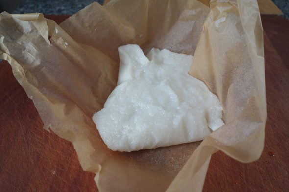
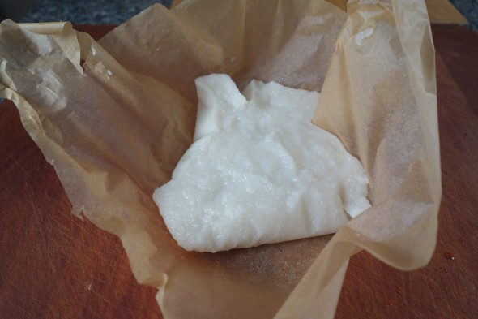

- If you bought frozen rice flour from a Korean grocery store, put it in the fridge overnight
until it thaws out and the flour becomes a powder.
If you made your own rice flour, you don’t need to do this.
Making rice cake with a microwave:
- Combine the rice flour, salt, and boiling water in a bowl.
It should have the consistency of the mixture in this photo.
- Cover it with plastic wrap, leaving a small gap to let the steam release.
Microwave for 2 minutes.
Mix the rice cake dough with a rice scoop or wooden spoon.
Re-cover with the plastic wrap and cook for another 2 minutes.
Spread ½ ts sesame oil on your cutting board.
Put the hot rice cake in the oily spot on the cutting board.
Pound it with a pestle for about 5 minutes, until it becomes smooth and elastic.


Making rice cake with a steamer:
- Combine the rice flour, salt, and boiling water in a bowl.
Line a steamer rack with parchment paper.
Add the rice cake dough and steam for about 25 minutes over hight heat.
Spread ½ ts sesame oil on your cutting board.
Put the hot rice cake in the oily spot on the cutting board.
Pound it with a pestle for about 5 minutes, until it becomes smooth and elastic
The rest of process is the same as the method of using a microwave oven.
 


Prepare the rice cake forddeokbokki:
- Cut it into 8 equal pieces, then roll each piece out into a 4 inch long cylinder shaped rice cake.
- Put ½ ts sesame oil onto your hands and gently rub the rice cakes to coat them in a thin sheen of oil.
This will give them a nice flavor and keep them from sticking to each other.


Prepare the rice cake forddeokguk (rice cake soup):
- Cut it into 2 equal pieces, then roll each piece out into two 10 inch long cylinder shaped rice cakes.
- Let them cool at room temperature for several hours, then slice diagonally into thin discs.
- Use right away, or put in a plastic bag and freeze for later use.
This amount is for 1 serving ofddeokguk, so if you want to make two bowls of soup,
make two batches.